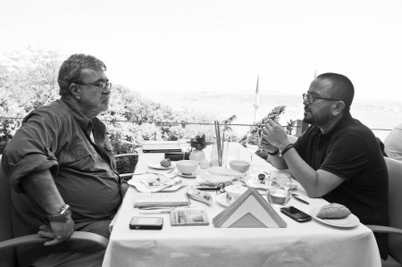

“Yemek yerken genişliyorum”
Ali Bey yemekle aranız nasıl?
Benim için yemek bir hastalık. Şöyle anlatayım bu hastalığı; bizim evde üç tane mutfak var. Mutfaklardan bir tanesi bana ait. Buradaki özel bıçaklar sadece benim. Bu bıçaklar başka mutfakta asla kullanılamaz. Gece canım çektiğinde mutfağa inerim. Bu durumda insanlar “Ekmeğin içine peynir koyarım, buzdolabından bir dolma çalarım” der. Ben o saatte mutfağa girip irmik helvası yaparım. On beş dakikada yaparım bu işi. Benim böyle zaaflarım var işte. Yaşamak için yediğim zamanlar çok ender oluyor. Akşam olunca benim aklıma ilk gelen şey “Nerede yemek yiyeceğiz?” sorusu oluyor. Nasıl anlatayım başka... Frankfurt’ta sevdiğim bir otel var. Orada kalmamın tek sebebi, lobideki Çin ve Japon lokantaları. Birbirlerine servis yapmıyorlar. Benim canım ikisini birden yemek istiyor. O zaman gidip odaya servis istiyorum, oturup afiyetle yiyorum.
Şimdi bana, “Gaziantep’te ne gördün desen?” hemen “İmam Çağdaş” derim. “Erzurum’da ne yaptın?” dersen “Cağ kebabı yedim” derim. “Diyarbakır’da ne yaptın?” diye soracak olsan yediğim lezzetli kaburga dolmasını anlatırım. Anlayacağın, yemek benim önemli bir zaafım, vazgeçemeyeceğim bir hobim. Gece yarısı mutfak maceramın önüne geçmek için evde çalışanlara tembihledim; ben yattıktan sonra, mutfakları tek tek kilitleyip anahtarları saklıyorlar. Dün gece üçte yine gittim aşağıya, acaba kilitlemeyi unutmuş olabilirler mi diye umutlandım. Kilitlemeyi unutmadılarsa, acaba anahtarı bulabilir miyim diye umutlandım. Gece yarısı çocuk gibi pijamalarla koltukların altında anahtar aradım.
Peki ne oldu da bu kriz tuttu?
Yatmadan evvel peynir gördüm, İzmir tulumuydu. Demek onu ekmek arası yapmayı aklıma takmışım. Artık çalışanlar işin çözümünü buldular; benim mutfakta hemen hemen hiç erzak tutmuyorlar. Tabii ekmek ve peynir dışında.
Diğer iki mutfak kime hizmet ediyor?
Zaman zaman evi davetlerde kullanıyoruz. Aşağıda endüstriyel bir mutfak var. O mutfakta bile ekmek dolabının nerede olduğunu bilirim. Tabağın nerede olduğunu bilmem, çünkü tabakla işim olmaz. Peyniri koyarım ekmeğin içine, öyle tost yapmak gibi bir derdim yok. Son bir haftadır belki sekiz-on defa eve fıstık ezmesi alınması yasaklandı. Biri yedi, diğeri dokuz yaşında iki çocuğum var. Sabah kalkınca ekmeğe fıstık ezmesi sürüp yemeyi seviyorlar. Tabii benden kalırsa... Normal insan fıstık ezmesini nasıl yer? Ekmeğe sürer değil mi?.. Ben kaşıklıyorum. Kendimi tutamayıp bir kavanozu bitiriyorum. Çocuklar sabah kalkıp kavanozu açınca bir de bakıyorlar ki bitmiş. Ardından “Babaaaaa!” diye çığlıklar başlıyor.
Adana, Almanya, İngiltere, Amerika bu sizin hayatınızın biçimlendiği ülkeler ve kentler. Bu ülkelerdeki yaşam, damağınızı nasıl etkiledi?
Adana’da damak geliştirmen gerekmiyor. Adana’da o damakla doğuyorsun zaten. Ben on yaşında, yani 1979’da Adana’dan ayrıldım. Tabii ki kebaptan etkilendim. Adana’da üç tane iyi restoran varsa, bunun en aşağı iki buçuğu kebapçıdır. Damak tadımda en belirgin gelişme 17-18 yaşlarında yaşadığım İngiltere’de oldu. İngiltere’de kaldığım dokuz senenin son iki-üç senesinde bir suşi zevki başladı. Yani benim damağımdaki gelişme, 17-18 yaşında suşiyle oldu. Sonrada kendim icatlara başladım. Örneğin, pilav yaparken pirincin üstüne limon sıkmayı keşfettim. Pilav tencerede fokurdamaya başlayınca, tuzu koymadan önce hafif limon sıkacaksın üstüne. O zaman pilav şeffaflaşır. Ben bu bilgiyi bir yerden okumadım, kendim deneyip buldum.
En çok hangi ülkenin mutfağını seviyorsunuz?
En çok Uzakdoğu’da Tayland mutfağını seviyorum. Oranın çok acı soslu, hindistancevizi sütüyle yapılan yemeklerini seviyorum. Çünkü tabağın dibinde yemeğin sosu kalıyor. Onun içine haşlanmış sade pirinci döküp bir güzel yiyorum. İspanya’da paella yemeyi çok seviyorum. Milano’ya gitsem muhakkak mozzerella peyniri yerim. Suşiyi çok severim ama füzyon suşiyi değil, gerçeğini isterim. Yani benim için Tayland bir numara, Japon mutfağı iki numara. Hilton’daki Dragon’da ördek yemeyi severim. Ama Çin’deki ördek ile buradaki ördek aynı olmuyor. Ördek etini dürüm yaparken mayonez koyar mısın? Denemenizi öneririm. Ördek eti, özel sos, ince kıyılmış pırasa, salatalık ve sonra mayonez koy; görüntü iğrenç oluyor, ama senin tabirinle lezzetinden damağın çatlıyor.
Bu Uzakdoğu aşkı nasıl doğdu?
Bir kere Hong Kong’a, bir kere de Tayland’a gittik. Bu gezilerde başladı Uzakdoğu sevdası. Ne zaman yemekten tatmin olunuyor biliyor musun? Yatağa rahatsız girdiğin zaman. Yemeğe benim gibi eşofmanla gideceksin. Çünkü yemek yerken genişliyorum. Eşofman giyersen, pantolon kemerinin sıkıştırmasından kurtulursun. Daha çok yiyebilirsin.
Aşçılarla büyümek nasıl bir şey?
Aşçılarla büyümek, kendinle mutfak arasına mesafe koyuyor. Seni daha şımarık hale getiriyor. Bizim evde çocuklar, “Aaa bu mu varmış, ben bunu yemem” diyebiliyorlar. Türkiye’de aşçıların yüzde sekseni Mengenlidir. Bizim evdekiler de öyle. Onların da egoları genelde çok yüksek olur. Sen o adama et şöyle pişsin, böyle pişsin diye ahkâm kesemezsin. Çünkü onlar bildikleri gibi pişirirler. Ama ben bu işin çözümünü buldum. Kendi mutfağımda kendi yemeğimi pişiriyorum.
Anneniz hiç yemek yaptı mı?
Annemin manyak bir hikâyesi var. Hikâye şu: Adana’daki evde, kapalı havuz, diskotek, tenis sahası, üç şoför, üç dört temizlikçi ve aşçı vardı. Koca Şevket Sabancı’nın karısı olan Hayırlı Sabancı mutfağa girmezdi tabii ki. Sonra ailenin kararıyla Frankfurt’a taşındık. Orada Adana’daki forsumuz pek kalmadı. Annemin on beş senelik falan ehliyeti var, ama hiç araba kullanmamış. Frankfurt’ta önce araba kullanmayı öğrendi. Daha sonra sıra yemeğe geldi. Orada aşçı falan yok, iş başa düşmüş. Annem köfte yapmayı defterden öğrendi. Yani annem yemek yapmaya başladığında 36 yaşındaydı. Ama yine de yemek yapmayı çok sevdi diyemem. Rahmetli babaannemin bir lafı annemin çok hoşuna gider: “Yapan da hanım, yaptıran da hanım.”

Evde mutfağa girdiğinizde çoluk çocuğa yemek yapıyor musunuz?
Tabii yaparım. Özellikle bir hindi yaparım ki tadı damağında kalır. Ama bunu hafta sonu yapmak gerekir. Çünkü sabah sekiz gibi hindiyle sevişmeye başlayacaksın.
Peki eşiniz mutfağa giriyor mu?
Eşim mutfağa sadece su almak için giriyor. Onun işi çok zor aslında. Evi, işi, çocukları ve benim aramda parçalanmış. İstanbul’daki trafik de malumunuz. Sizden her gün en az bir buçuk saat çalıyor. Vuslat fiziğinden de belli, kuş kadar yemek yer. Bizim evde iki mönü olur. Vuslat İstanbul’dayken birinci mönünün yemekleri pişer. Bu mönüde kıymalı ıspanak, enginarlı bilmem ne, hindi köfte gibi sağlıklı yemekler yer alır. Bir de Vuslat’ın olmadığı zamanlar devreye giren ikinci mönü vardır. Bu mönüde de pirzola, kızarmış patates, pilav, şnitzel gibi lezzetli yemekler bulunur. Bu arada yoğurtlu, köfteli, patatesli, sumaklı bir yemek yaparım, herkes parmaklarını yer. Tarifi şöyle: Küçük köfteler yağda kızartılır, ardından bir tabağa konur, üstüne kızarmış patates, onun üstüne de süzme yoğurt dökülür. Bunun üstüne bol sumak ve köfteden artakalan yağ boca edilir. Yanında kırmızı soğan ve diyet kolayla muhteşem olur. Bunu masaya koyduğunuz zaman her tarafın mis gibi yağ kokar. Önlüğünüzün her tarafına köftenin yağı sıçrar... İşte ben bundan hoşlanıyorum. Lavaşla tavuğu dürüm haline getirmeye bayılırım. Ramazan ayını çok severim. Biraz detoks, biraz da oruç açmanın keyfini sevdiğim için oruç tutarım. Ramazanda çıkan pideyi başka zaman yiyemezsiniz. Ramazan pidesi sıcacık, yumuşacık, tozlu, acayip bir şeydir.
En sevdiğiniz ve hiç sevmediğiniz yemek hangisidir?
En sevdiğim yemek suşi, kızarmış yengeç ve pilavdır. Pilavdan birkaç mönü yapabilirim. Mesela bir kısmına soya sosu, mayonez koyarsın, bir kısmını ezme salatayla ikram edersin. Bir kısmının üstüne kıyma döşersin. Yerken beni çok uğraştıran yemeği hiç sevmem. Hiç sevmediğim yemek tofudur.
Kilo sorununuz olmuyor mu?
Bu kadar yemek yiyince kilo sorunu da oluyor tabii ki. Diyetisyene gidiyorum. Sosyetik olmayan bir doktorla çalışıyorum. Sonra bir spor hocasıyla çalışıyorum. Bir alet yapmışlar, üstüne çıkıyorsun alet dakikada 3.000 defa titriyor. Bu aletin üstünde yürümek normal yürüyüşten daha çok efor gerektiriyor. Çünkü 3.000 titreşim sizin ağırlığınızı artırıyor. Ayrıca yürürken dengenizi korumanız için bütün kaslarınız çalışıyor.
Bir günlük yemek maceranızı anlatır mısınız?
Şimdi bunu ikiye böleceğiz. Çünkü hangi psikolojide olduğum çok önemli. Her iki psikolojide bir tane müşterek nokta var, o da kahvaltıyı sevmemem. Genellikle kahvaltı etmem. Öğlen yemeklerini de hafif geçiştiririm. Benim sıkıntım akşam yemeklerinde. Ortalama öğle yemeğim, ofiste tonbalıklı salata veya salata büfesinden tepeleme doldurduğum salata. Aralarda hiçbir şey yemem. Akşam eğer psikolojim iyiyse sebze çorbasıyla yetinirim. Ama psikolojim kötüyse dur durak bilmeden yerim. Bu dertten kurtulmak için doktora da gittim. Öyle çok sipariş veriyorum ki, garson “Emin misiniz?” diye sormaktan kendini alamıyor. İspanya’ya maça gitmiştim. Doktorum da aynı gruptaydı. Ona dönüp, “Yemeğe gideceğiz ama burada bana doktorluk yapmak yok” dedim. Lokantaya gittik, adam gördüklerine hayret etti. Çünkü ben paella’yı ekmekle yedim. Doktor dayanamadı, “Ya Ali sen ekmek arası makarna da yiyorsundur” dedi. Evet, adamın dediği doğru.
Yemekte, ne içersiniz, ne dinlersiniz?
Yemekte biz pek müzik dinlemeyiz, genellikle televizyon açık olur. Mesela, suşiyle chardonnay üzümünden yapılmış şarap iyi gider. Bir yere gidince bilmediğim için listedeki en pahalı şarabı seçiyorum. Ünlü mimar Reşit Soley’i eğer kariyerinde yorulmamış olsaydı o bilgisi ve hırsıyla manyak işler yapardı. Ama adam gitmiş Bozcaada’ya yerleşmiş, bağlar kurmuş, güzel şaraplar yapıyor. Onun şaraplarını seviyorum. Eğer et yiyorsam pinotage üzümünden yapılmış kırmızı şarabı tercih ediyorum. Güney Afrika’nın şarapları çok hoşuma gidiyor. Benim peder şarap işinden çok iyi anlar. Senede iki kez annemle birlikte şarap içmeye Bordeaux’ya gider. Pederin evinde içtiği şarap listedeki en pahalı şarap olmayabilir ama en lezzetli şaraptır mutlaka.
Evinizde şarap kavınız var mı?
Ev büyüyünce kav da büyüdü. Kavda şu anda hâlâ seksi isimler var. Türk şaraplarının da iyileri var. Bir de Reşit’in çok güzel beyaz şarapları var. Göreme’de bir şarap imalathanesine gittik. Hemen sahibi geldi. Bize şaraplarını tattırdı. Adama ne diyeceksin? “İyi” diyeceksin, “Yüz üstünden yetmiş” diyeceksin. Bunları söylemek yetmiyor, bir de şarap alacaksın. Tam on iki kasa aldım. Orada yüz üstünden yetmiş dediğim, aslında otuz falan ederdi. Eşe dosta dağıttım.
Kebap sever misiniz?
Tabii ki çok severim. Kebap benim için mezesiyle birlikte bir bütün. Adana’ya ya da buraya Yüzevler’e giderim; adam bana bir tahin salatası getirir, kebap gelinceye kadar bandıra bandıra yerim. Adana’da Yüzevler’i de, Asmaaltı’nı da, Mesut’u da severim. İstanbul’da Tike ve Köşebaşı güzeldir.
Şirket yönetmek mi, yemek yapmak mı daha zor?
Bu soruya iki cevabım var. Yemeği kendim için yapıyorsam, adı üstünde kendin pişir kendin ye; istediğim gibi pişiririm. Şirket yönetmek çok daha zordur. Çünkü şirketi kendin için yönetmezsin. Eğer yemeğini tadacak birileri varsa o zaman yemek yapmak da zorlaşır.
Et mi, sebze mi, balık mı?
Önce et, sonra sebze, en sona da balık.
En favori restoranlarınız?
Türkiye’de Zuma, New York’ta Buddha Kahn, Londra’da Kayysss bir Çin restoranı.
Son sözünüz?
Yemek yemek benim hayatımın önemli bir parçası. Bu böyle biline. Ayrıca size bir önerim var. Ördek dürüm yerken yanına mutlaka kızarmış yosun isteyin. O zaman ördeğin lezzetine inanmayacaksınız. Herkese lezzetli ve keyifli yemekler diliyorum.
(13 Haziran 2010)
| ALİ SABANCI'DAN HİNDİ VE MAKARNA TARİFİ Fırında hindi: Hindi yıkanır, tuzlanır ve 150 derece ısıtılmış fırına verilir. Hafif kızarmaya başladığında üstüne bal sürülür. Biraz daha kızarınca bu kez bira sürülür. Fırında makarna: Bir sıra makarna bir sıra jambon ya da bir sıra sucuk dizilir. Onun üstüne de bol havuç eklenır. Sonra bol bol peynir rendelenir. En üste yine makarna ilave edilir. Fırına sürülür, pişirilirken çok kurutulmamalıdır. |